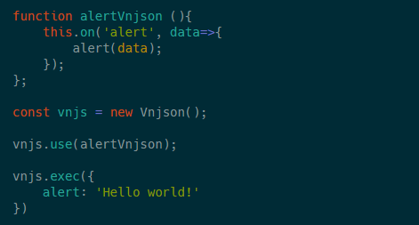

Новости
Переписал интерфейс подключения плагинов
Выбор стоял между самописным генератором статических сайтов у меня уже были черновые наброски.
Но иногда я поглядывал на профессиональные инструменты. Такие как VuePress, или давний знакомый Hexo
В итоге выбор пал на Hexo
vpv-tpl При помощи nodejs & npm можно автоматически собирать проект визуальной новеллы. Сцены написанные на yaml. Так же стили scss и экраны Vue